Vector data in R Points, lines and polygons · a layer as a data frame · joining by location and by ID · Exercise 1
Measuring areas, distances and angles Degrees and metres · area · distance to a point and to a border · buffers · length inside a polygon · direction
Relations between places Nearest feature · neighbours · shortest routes · Exercise 2 · straight lines between cities · friendship as distance · standard errors for nearby places
An application to wildfire smoke Daily smoke maps · counties under smoke each day · people under heavy smoke · ground monitors
Today covers spatial data stored as points, lines and polygons. For each tool I show a published study that used it, then R code on a small example. Not covered: grids of cells such as satellite images, interactive web maps, turning addresses into coordinates, and spatial regression models.
1 · Vector data in R
Overview of part 1
How R stores spatial data.
Objects: R’s sf package stores points, lines and polygons in a table. Each row is one place, and one column holds its shape.
Reading and subsetting: the Census county file and New York’s counties.
Joining: the county that contains Warren Hall, then that county’s population.
Exercise 1: the county and population of a place you pick.
Later in this part: Warren Hall is in Tompkins County, code 36109.
Points, lines and polygons
Vector data store each place as a point, a line or a polygon, with a row of data.
Warren Hall is a point, I-90 is a line and Tompkins County is a polygon.
A layer is a table with one row per place.
Warren Hall is the Cornell building that houses this course’s department, in Ithaca. Ithaca is in Tompkins County. A county is the level of government below the state. A MULTIPOLYGON can have several parts, such as a county with islands. Data: Census Bureau county and road files, 2024.
The project folder
Download the zip from the session page, unzip it and open 23-spatial-vector.Rproj.
Every path on the slides then works.
I downloaded all the data before class, so you need no account, key or internet connection.
23-spatial-vector/, as its README.md describes it
data/census/ county and state outlines (cb_2024_us_*_500k.zip); county population, 2020-2024data/noaa/hms/ NOAA's smoke outlines, one zip per day of June 2023data_clean/ interstates_ny_box.gpkg: the Census Interstate lines near New York sci_tompkins.csv: Facebook friendship links between Tompkins and every county pm25_june2023.csv: EPA daily fine particles at 947 monitors, June 2023data/inpe/, data/osm/, and the other files in data_clean/: the page's two worked examplescode/ 1_vector.R ... 4_smoke.R in lecture order; 5_medicaid.R, 6_amazon.R; run_everything.R23-spatial-vector.R the live script: every code slide in ordertools/ what made data_clean/ from the full downloads before class (these need the network)
NOAA is the US weather and ocean agency. Meta runs Facebook. A box is a rectangle that sets a map’s area. A .gpkg file holds one map layer. The scripts install sf, igraph, fixest and magick if needed. The README gives each file’s source and licence.
Reading the county file
st_read() reads the Census county file.
The result is a table of 3,235 counties, with 12 columns of data and one column of shapes.
print(co, n = 0) shows only the header: the shape type, the bounding box and the coordinate system.
R Console, in the 23-spatial-vector folder. Installs sf if missing
R Console, in the 23-spatial-vector folder; reads data/census/cb_2024_us_county_500k.zip
unzip("data/census/cb_2024_us_county_500k.zip", exdir ="data_clean/counties") # seven filesco <-st_read("data_clean/counties/cb_2024_us_county_500k.shp", quiet =TRUE)print(co, n =0) # the header alone, no rows#> Simple feature collection with 3235 features and 12 fields#> Geometry type: MULTIPOLYGON#> Dimension: XY#> Bounding box: xmin: -179.1467 ymin: -14.5487 xmax: 179.7785 ymax: 71.38782#> Geodetic CRS: NAD83
A shapefile is several files with the same name. The .shp file holds the shapes, .dbf the table and .prj the coordinate system. The bounding box is the smallest rectangle around all the counties. It runs from −179 to 180 because Alaska’s islands cross the 180th meridian. The coordinate system, NAD83, is in degrees of longitude and latitude.
An sf object is a data frame
An sf object is a data frame with one extra column, the geometry. The shapes come along when you pick rows and columns.
R Console, in the 23-spatial-vector folder; co from the slide before
class(co)#> [1] "sf" "data.frame"co[1:3, c("GEOID", "NAME", "STUSPS", "ALAND")] # three rows, four columns: the geometry comes too#> Simple feature collection with 3 features and 4 fields#> Geometry type: MULTIPOLYGON#> Dimension: XY#> Bounding box: xmin: -88.47323 ymin: 30.99708 xmax: -84.88908 ymax: 32.51019#> Geodetic CRS: NAD83#> GEOID NAME STUSPS ALAND geometry#> 1 01069 Houston AL 1501742250 MULTIPOLYGON (((-85.71209 3...#> 2 01023 Choctaw AL 2365900084 MULTIPOLYGON (((-88.47323 3...#> 3 01113 Russell AL 1660653961 MULTIPOLYGON (((-85.4347 32...
GEOID is the county code: two digits for the state, then three for the county. Tompkins is 36109: New York is 36 and Tompkins is 109. Alabama’s codes start with 01, so the leading zero matters. STUSPS is the state’s two letters. ALAND and AWATER are land and water area in m². The file has 3,144 counties in the 50 states and DC, plus 91 rows for five territories.
Subsetting and plotting New York’s counties
[ keeps the rows that meet a condition, as with any data frame.
New York has 62 counties.
plot(st_geometry()) draws their shapes.
R Console, in the 23-spatial-vector folder; co from the slides before
ny <- co[co$STUSPS =="NY", ] # rows by a conditionnrow(ny)#> [1] 62tk <- ny[ny$NAME =="Tompkins", ] # Tompkins County, used again belowpar(mar =c(0, 0, 0, 0))plot(st_geometry(ny), col =ifelse(ny$NAME =="Tompkins", "#B31B1B", "grey90"), border ="white")
st_geometry() keeps only the shapes. plot() on the whole sf object would draw one map per column. Tompkins is in red.
Method: They joined each mine and each conflict event to a grid of square cells about 55 km wide. Then they followed each cell as world mineral prices moved.
Data: every cell of Africa, 1997-2010.
Result: Violence rose in a cell when the price of its mineral rose. Rising prices may explain up to a quarter of average violence.
A spatial join matches each point to the polygon that contains it. The maps are Figure 3 of “This Mine Is Mine! How Minerals Fuel Conflicts in Africa”. Left: conflict events. Right: cells with mines in black, their neighbours in grey.
Points from longitude and latitude
To find Warren Hall’s county, first turn its coordinates into an sf point.
st_as_sf() turns a table with longitude and latitude columns into points.
Longitude comes first.
crs = 4326 marks the numbers as GPS degrees.
R Console, in the 23-spatial-vector folder; sf loaded
wh <-st_as_sf(data.frame(name ="Warren Hall", lon =-76.4797, lat =42.4490),coords =c("lon", "lat"), crs =4326) # x (longitude) first, then y (latitude)wh#> Simple feature collection with 1 feature and 1 field#> Geometry type: POINT#> Dimension: XY#> Bounding box: xmin: -76.4797 ymin: 42.449 xmax: -76.4797 ymax: 42.449#> Geodetic CRS: WGS 84#> name geometry#> 1 Warren Hall POINT (-76.4797 42.449)
Longitude is degrees east or west of Greenwich, negative in the Americas. Latitude is degrees north or south of the equator. 4326 is the code for GPS coordinates (WGS 84). Web maps show latitude first: 42.4490, −76.4797. A table of households or firms with coordinates works the same way.
The county that holds Warren Hall
st_join() adds to each point the columns of the county that contains it.
Warren Hall is in Tompkins County, code 36109.
A point outside every county, such as one at sea, gets NA.
R Console, in the 23-spatial-vector folder; co and wh from the slides before
wh <-st_transform(wh, st_crs(co)) # the point in the counties' CRSst_drop_geometry(st_join(wh, co[c("GEOID", "NAME", "STUSPS")]))#> name GEOID NAME STUSPS#> 1 Warren Hall 36109 Tompkins NY
co is the county layer. Both layers must use the same coordinate system (CRS), so st_transform() converts the point first. Otherwise st_join() stops with an error. st_drop_geometry() drops the shapes and returns a plain data frame.
Merging population by GEOID
Population comes from a separate Census table.
merge() joins it to the counties by GEOID, the county code.
Read the codes as text with colClasses.
As numbers, “01” becomes 1 and only 1,150 of the 3,144 counties match.
Tompkins had 105,602 people in 2024.
R Console, in the 23-spatial-vector folder; co from the slides before; reads data/census/co-est2024-alldata.csv
pop <-read.csv("data/census/co-est2024-alldata.csv", fileEncoding ="latin1",colClasses =c(STATE ="character", COUNTY ="character")) # codes stay text: "01"pop <- pop[pop$SUMLEV ==50, ]pop$GEOID <-paste0(pop$STATE, pop$COUNTY)head(pop$GEOID, 3)#> [1] "01001" "01003" "01005"cp <-merge(co, pop[c("GEOID", "POPESTIMATE2024")], by ="GEOID")nrow(cp)#> [1] 3144st_drop_geometry(cp[cp$GEOID =="36109", c("NAME", "POPESTIMATE2024")])#> NAME POPESTIMATE2024#> 1885 Tompkins 105602
colClasses sets a column’s type when R reads the file. merge() keeps the rows found in both tables, so the 91 territory rows drop out. all.x = TRUE would keep them, with NA. cp holds the counties with population, and co is unchanged. POPESTIMATE2024 is the estimate for July 1, 2024.
4 minutes. Find the county and the population of a place you pick, with a spatial join and a merge. co is the county layer and pop the population table from the slides before.
Pick any spot in the United States on a web map. Right-click it to see its coordinates. Web maps show latitude first, but st_as_sf() takes longitude first.
Make the point and put it in the counties’ CRS: p <- st_as_sf(data.frame(name = "my place", lon = ..., lat = ...), coords = c("lon", "lat"), crs = 4326), then p <- st_transform(p, st_crs(co)).
Its county, by location: j <- st_join(p, co[c("GEOID", "NAME", "STUSPS")]), then st_drop_geometry(j).
Its population, by GEOID: merge(st_drop_geometry(j), pop[c("GEOID", "POPESTIMATE2024")], by = "GEOID").
Try a point on water near a coast, such as the middle of a bridge.
Compare with the room: the largest county population anyone found. Then share a spot that returned no county, and why.
R Console, in the 23-spatial-vector folder; co and pop from the slides before
pl <-data.frame(name =c("Times Square", "Willis Tower", "Hollywood sign", "Golden Gate Bridge"),lon =c(-73.9855, -87.6359, -118.3217, -122.4783),lat =c(40.7580, 41.8789, 34.1341, 37.8199))p <-st_transform(st_as_sf(pl, coords =c("lon", "lat"), crs =4326), st_crs(co))j <-st_join(p, co[c("GEOID", "NAME", "STUSPS")])merge(st_drop_geometry(j), pop[c("GEOID", "POPESTIMATE2024")], by ="GEOID", all.x =TRUE)#> GEOID name NAME STUSPS POPESTIMATE2024#> 1 06037 Hollywood sign Los Angeles CA 9757179#> 2 17031 Willis Tower Cook IL 5182617#> 3 36061 Times Square New York NY 1660664#> 4 <NA> Golden Gate Bridge <NA> <NA> NA
Los Angeles County is the largest, with 9,757,179 people. Manhattan is New York County. The middle of the Golden Gate Bridge returns no county, because the county shapes stop at the shoreline, about 630 m away.
2 · Measuring areas, distances and angles
Overview of part 2
How to measure areas, distances and directions in R.
Units: degrees and metres, and which coordinate system to use.
Area: Tompkins County, compared with the Census figure.
Distance: from each county to Times Square, and from Warren Hall to Pennsylvania.
Buffers and lengths: the counties within 50 km of Warren Hall, and the Interstate miles in New York.
Direction: from Warren Hall to Times Square.
Each comes with a published study that used it.
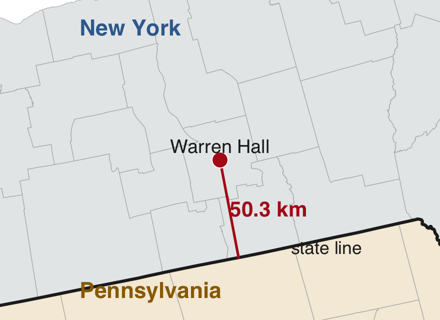
Later in this part: Warren Hall’s distance to Pennsylvania.
Degrees and metres
Longitude and latitude are angles.
A degree of longitude spans 111 km at the equator, 82 km at Ithaca and nothing at the pole.
To measure in kilometres, use the round Earth or a map projection in metres.
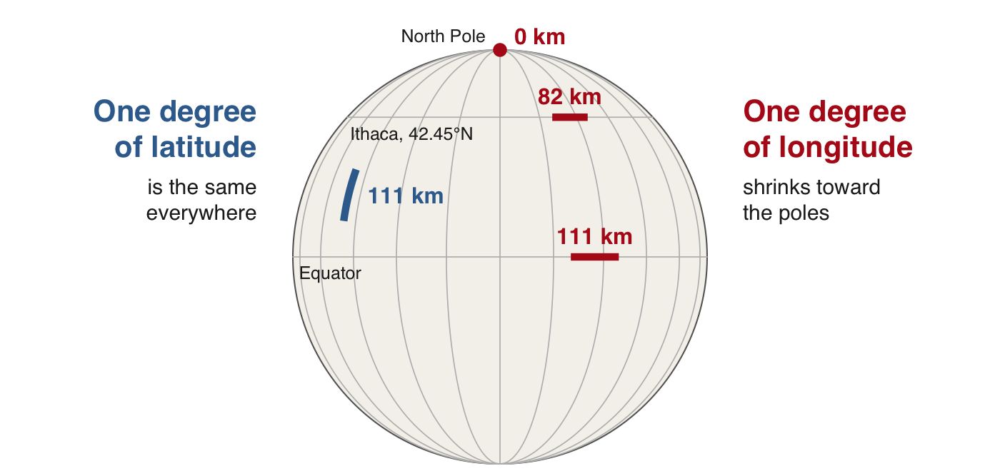
A geographic CRS, such as 4269 or 4326, gives degrees. A projected CRS gives metres on a flat map. Flattening the Earth always stretches something, the way an orange peel tears when pressed flat. Lengths on the round Earth here use a sphere of radius 6,371 km. Each coloured segment spans 15 degrees, and its label gives the length of one degree.
Choosing a projection
A coordinate reference system (CRS) is either geographic, in degrees on the round Earth, or projected, in metres on a flat map.
Every flat map distorts something.
Pick the projection that better meets your needs.
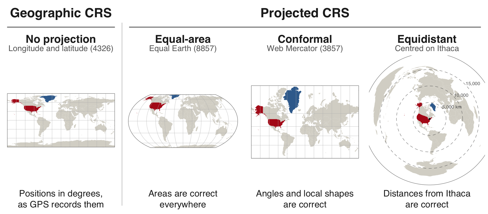
Red: the United States. Blue: Greenland, which has about a fifth of the US’s area. The codes come from the EPSG registry, and st_crs() shows a layer’s code. UTM is a conformal projection made of 60 strips, each 6° wide. Azimuthal projections keep directions from one point, as the Ithaca map does. Compromise projections, such as Robinson, keep nothing exactly but distort less overall. The grouping follows Lovelace, Nowosad & Muenchow (Geocomputation with R, section 7.6).
Area and perimeter of Tompkins County
st_area() measures in the layer’s CRS, and the CRS changes the answer.
Conus Albers, an equal-area projection, gives 1,273.0 km², as the Census reports.
Web Mercator gives 1.84 times as much.
Measure areas on the round Earth or in an equal-area projection.
When the attribute table reports an area, such as ALAND, use it.
R Console, in the 23-spatial-vector folder; tk from the slides before
5070 is the EPSG code of Conus Albers. st_area() returns m². Web Mercator stretches areas by 1/cos²(latitude), which is 1.84 at Ithaca. For the perimeter, st_boundary() turns the polygon into a line and st_length() measures it. ALAND (1,229.3 km²) leaves out the county’s part of Cayuga Lake.
Distance to a point
Question:Becker & Woessmann (QJE, 2009) asked why Protestant counties in Prussia were richer. Max Weber credited a Protestant work ethic.
Method: Protestantism spread outward from Wittenberg, where Luther began the Reformation. Each county’s distance to Wittenberg serves as an instrument for its share of Protestants.
Data: 452 Prussian counties in the census of 1871.
Result: Each 100 km from Wittenberg meant 9.5 percentage points fewer Protestants. Protestant counties were more literate, and literacy explains their higher incomes.
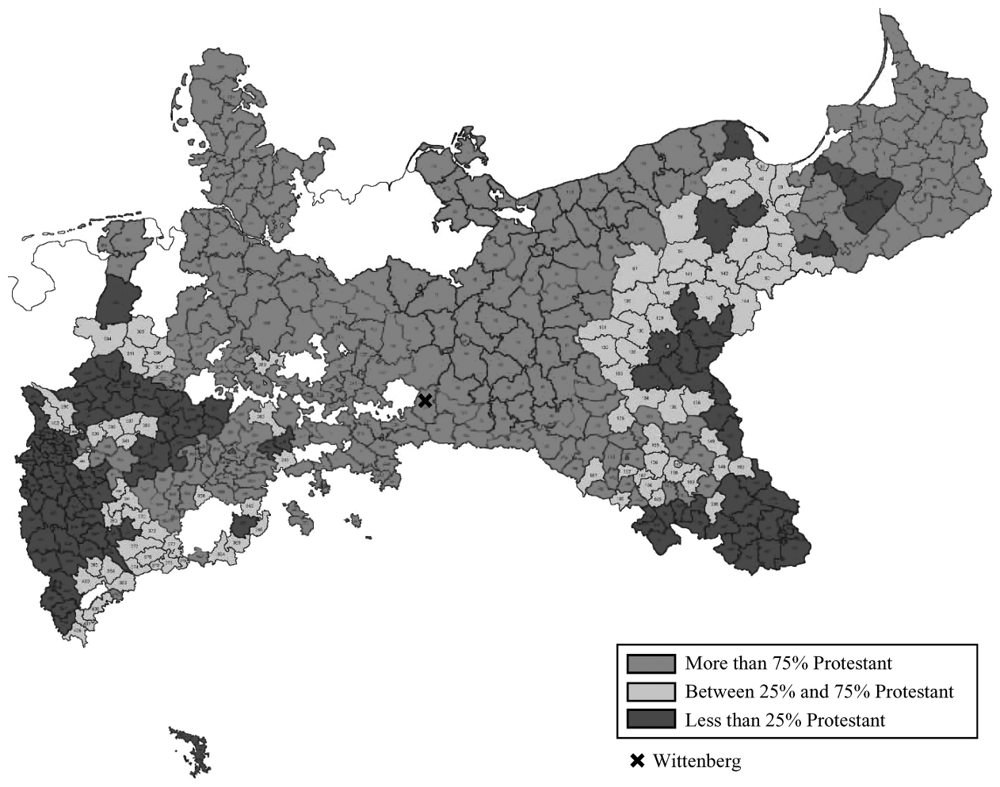
An instrument changes the treatment (here, the Protestant share) and affects the outcome only through it. The map is Figure III of “Was Weber Wrong? A Human Capital Theory of Protestant Economic History”. The cross marks Wittenberg.
Each county’s distance to Times Square
st_distance() gives the distance from a point inside each New York county to Times Square. Tompkins is 280 km away; Niagara, the farthest, is 479 km away.
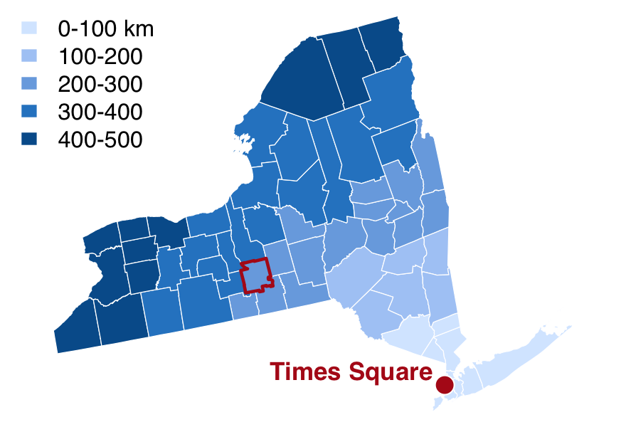
R Console, in the 23-spatial-vector folder; ny (New York's 62 counties) from Part 1
ts <-st_as_sf(data.frame(name ="Times Square", lon =-73.9855, lat =40.7580),coords =c("lon", "lat"), crs =4326)ny_co <-st_transform(ny, 5070) # New York's counties, in metrespt_ny <-st_point_on_surface(st_geometry(ny_co)) # a point inside each countyny_co$km_ts <-as.numeric(st_distance(pt_ny, st_transform(ts, 5070))) /1e3km <-setNames(round(ny_co$km_ts), ny_co$NAME); km[c("Tompkins", names(which.max(km)))]#> Tompkins Niagara #> 280 479
st_point_on_surface() returns a point that is always inside the county. A centroid, the centre of the area, can fall outside a curved shape. Tompkins is outlined in red.
Distance to a border
Question:Holmes (JPE, 1998) asked whether state policies that favour business attract manufacturing.
Method: Counties on the two sides of a state border are alike except for their states’ policies. He compared counties near the borders between right-to-work states and other states.
Data: US counties near these borders, in bands of 25 miles.
Result: Manufacturing’s share of jobs is about a third higher on the right-to-work side.
A right-to-work law bans contracts that require union membership. The map is Figure 3 of “The Effect of State Policies on the Location of Manufacturing: Evidence from State Borders” (working paper version, 1996). It shades the counties within 25 miles of these borders, dark on the right-to-work side.
Distance to a state and its border
Warren Hall is 50.3 km from Pennsylvania.
Its distance to New York is 0, because it is inside New York.
Its distance to New York’s border, from st_boundary(), is also 50.3 km.
R Console, in the 23-spatial-vector folder; wh from the slides before; reads data/census/cb_2024_us_state_500k.zip
st_distance() returns 0 for a point inside a polygon. 5070 is Conus Albers, an equal-area projection in metres. On the round Earth the distance is 50.0 km, 0.6% shorter.
Method: They drew rings around about 1,600 plants that opened or closed. Then they compared homes and births inside and outside the rings, before and after.
Data: house prices within 0.5 mile and birth weight within 1 mile of each plant.
Result: An opening lowered house values within 0.5 mile by 11%. It raised the chance of low birth weight within 1 mile by about 3%.
Low birth weight is under 2,500 g. The figure is Figure 2 of “Environmental Health Risks and Housing Values: Evidence from 1,600 Toxic Plant Openings and Closings”. Air pollution falls with distance from the plant and is gone by about 1 mile, so the rings are small.
A 50 km buffer around Warren Hall
st_buffer() draws the area within 50 km of Warren Hall. It reaches 11 counties, all in New York, because Pennsylvania is 50.3 km away.
R Console; co and wh_m from the slides before
b <-st_buffer(wh_m, 50000) # within 50,000 mco_m <-st_transform(co, 5070)near <- co_m[b, ] # the counties b reachestable(near$STUSPS)#> #> NY #> 11
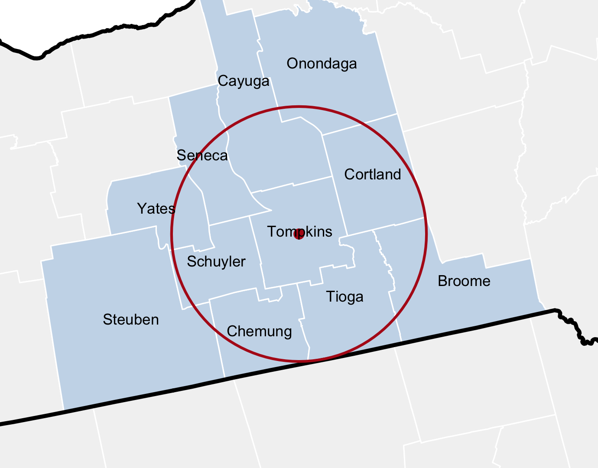
The distance is in the CRS’s units, metres in 5070. co_m[b, ] keeps the counties that touch or overlap the circle. The thick line is New York’s border. The code for the map is on the session page and in the live script.
Method: They cut the Interstates at each metropolitan area’s boundary and measured the kilometres inside. Older networks, cut the same way, serve as instruments.
Data: US metropolitan areas, 1983-2003. The older networks are the 1947 highway plan, the 1898 railroads and early exploration routes.
Result: 10% more highway in 1983 raised a city’s employment by about 1.5% over the next 20 years.
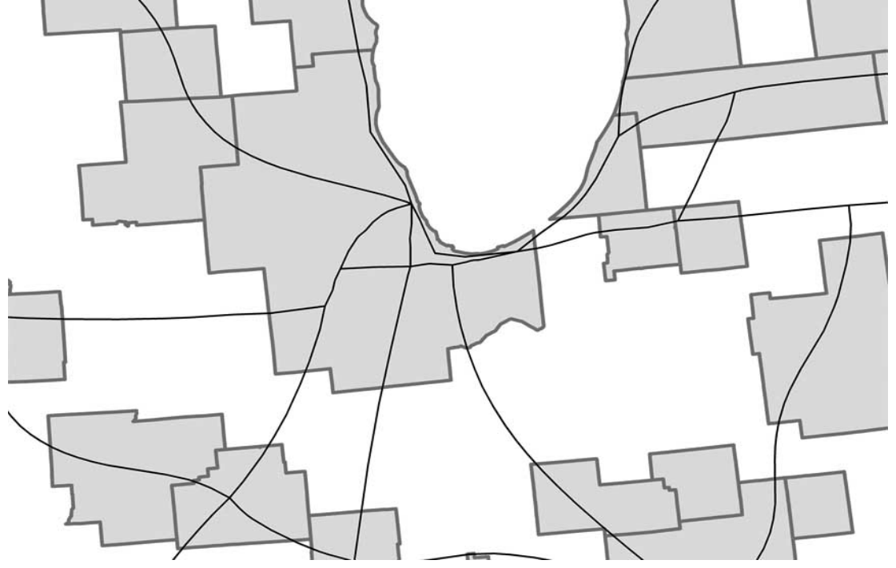
A metropolitan area is a city plus the counties that commute to it. The map shows the 1947 plan’s lines around Chicago, over the shaded metropolitan areas. It is part of Figure 2 of the 2008 working paper of “Urban Growth and Transportation”.
Interstate miles in New York
st_intersection() keeps the part of each Interstate inside New York: 3,599 miles (5,792 km) in the file. TIGER draws each direction of a divided highway as its own line, so the road itself is about half that length.
R Console, in the 23-spatial-vector folder; ny_m (New York in 5070); reads data_clean/interstates_ny_box.gpkg
it <-st_read("data_clean/interstates_ny_box.gpkg", quiet =TRUE) # Census Interstate lines near New Yorkit_ny <-st_intersection(st_transform(it, 5070), ny_m["STUSPS"]) # the parts inside New York# st_intersection() warns that attributes are assumed constant: expected hereit_ny$miles <-as.numeric(st_length(it_ny)) /1609.344round(sum(it_ny$miles), 1)#> [1] 3599.1round(sort(tapply(it_ny$miles, it_ny$FULLNAME, sum), decreasing =TRUE)[1:3], 1)#> I- 90 I- 87 I- 86 #> 770.1 669.1 534.9
TIGER is the Census map database of roads and boundaries. RTTYP “I” marks an Interstate highway. A divided highway has a separate roadway for each direction. A GeoPackage (.gpkg) is one file with a layer’s shapes, table and CRS. One mile is 1,609.344 m.
Direction
Question:Anderson (JEEA, 2020) asked whether years of breathing polluted air raise mortality.
Method: He found the direction from each home to its nearest major highway. With daily wind data, this gives the share of days the home was downwind.
Data: the homes of everyone who died in Los Angeles over three years.
Result: Doubling the time spent downwind raised mortality among people 75 and older by about 4% to 6.5%.
A home’s direction from the highway is fixed, and the wind decides how often the home is downwind. The panels are Figure 1 of “As the Wind Blows: The Effects of Long-Term Exposure to Air Pollution on Mortality”. The hatched side is downwind for each wind direction.
Direction from Warren Hall to Times Square
A bearing is the angle clockwise from north.
Measure it in the local UTM zone, a projection that keeps angles.
There, Times Square lies at 132° from Warren Hall, against 131° on the round Earth.
Conus Albers gives 120°, because its north tilts 12° here.
R Console; wh and ts from the slides before
bearing <-function(a, b, crs) { # degrees from map north d <-st_coordinates(st_transform(b, crs)) -st_coordinates(st_transform(a, crs)) # east, north (m) (atan2(d[1], d[2]) *180/ pi) %%360# 0 to 360}round(c(utm_18N =bearing(wh, ts, 32618),albers =bearing(wh, ts, 5070)), 1)#> utm_18N albers #> 132.2 120.0
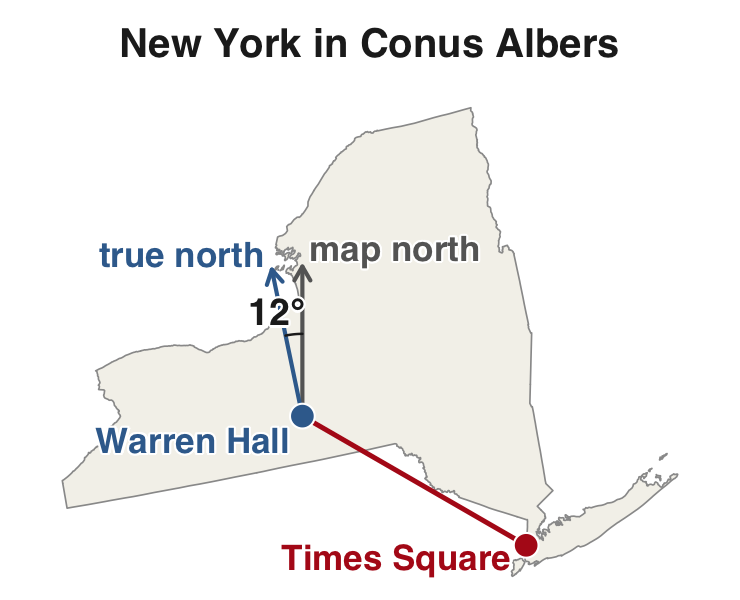
EPSG 32618 is UTM zone 18N, from 78°W to 72°W, which includes Ithaca and New York City. atan2(east, north) gives the angle from north in radians. Raw longitude and latitude give 124°, because they treat a degree east (82 km here) as equal to a degree north (111 km). UTM’s north is 1° off true north at Warren Hall.
3 · Relations between places
Overview of part 3
How to find nearby places, neighbours and routes.
Nearest feature: the nearest Interstate to Warren Hall and to each county.
Neighbours: counties that touch, and counties two borders away.
Shortest routes: the fewest county lines from Tompkins to Los Angeles, and Exercise 2.
Other distances: straight lines between cities, and Facebook friendships.
Standard errors when nearby counties are alike.
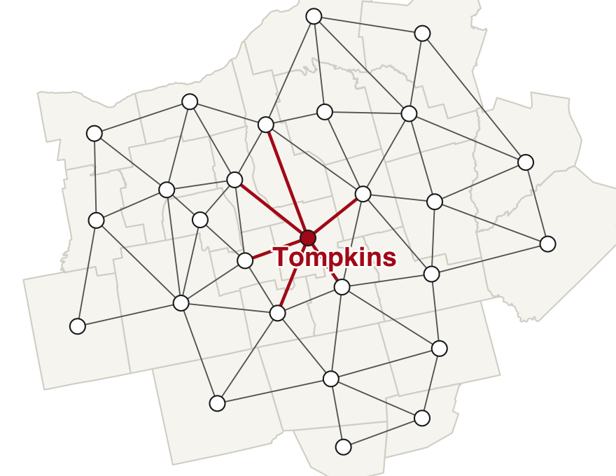
Later in this part: each county is a dot, and a line joins two counties that touch.
Method: They compared new village roads with wider national highways. For each village, they measured the distance to the nearest road of each kind.
Data: forest cover across India, measured from satellite images.
Result: New roads to more than 100,000 villages had no effect on forest loss. Wider highways, 10,000 km of them, caused forest loss along their routes.
Forest cover is measured from satellite images. The maps are Figure 1 of the authors’ 2019 version of “The Ecological Impact of Transportation Infrastructure”. Left: the new national highways. Right: forest cover in 2001.
The nearest Interstate to Warren Hall
st_nearest_feature() finds the nearest Interstate, and st_distance() measures how far it is.
Warren Hall’s nearest Interstate is I-81, 30.4 km away.
Among New York’s counties, St. Lawrence is farthest from an Interstate, at 75 km.
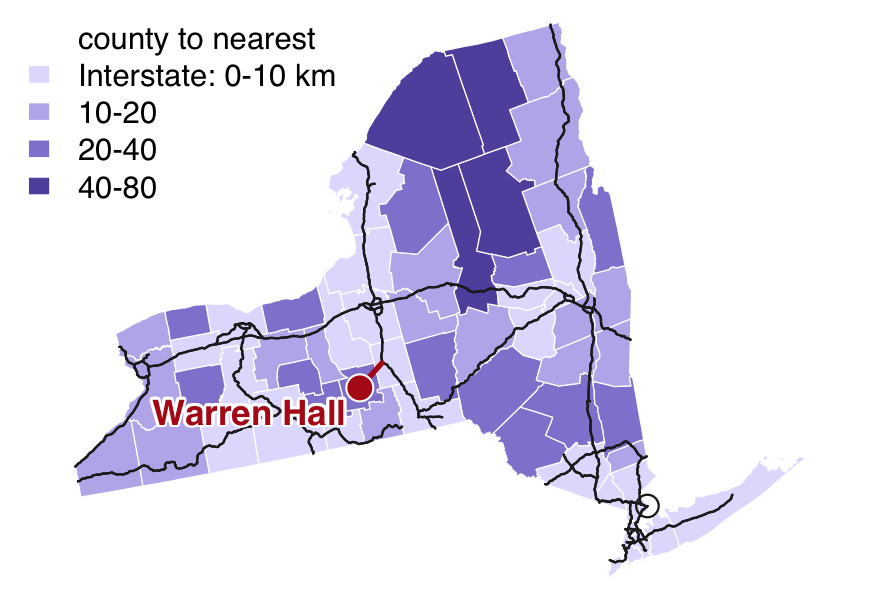
R Console; wh_m, it_ny, ny_co and pt_ny from Part 2
k <-st_nearest_feature(wh_m, it_ny) # row of the nearest Interstate piecec(it_ny$FULLNAME[k], round(as.numeric(st_distance(wh_m, it_ny[k, ])) /1e3, 1)) # name, km#> [1] "I- 81" "30.4"kk <-st_nearest_feature(pt_ny, it_ny) # every New York county at onceny_co$km_it <-as.numeric(st_distance(pt_ny, it_ny[kk, ], by_element =TRUE)) /1e3head(sort(setNames(round(ny_co$km_it), ny_co$NAME), decreasing =TRUE), 2) # km, farthest two#> St. Lawrence Franklin #> 75 59
wh_m is Warren Hall in metres, it_ny the Interstates in New York and pt_ny a point inside each New York county. With by_element = TRUE, each point is measured to its own nearest road only.
Method: They compared every pair of touching counties on opposite sides of a state line. Each pair shares a local economy, but each county follows its own state’s minimum wage.
Data: earnings and jobs in restaurants and other low-wage work, 1990-2006.
Result: Higher minimum wages raised earnings and cost no jobs.
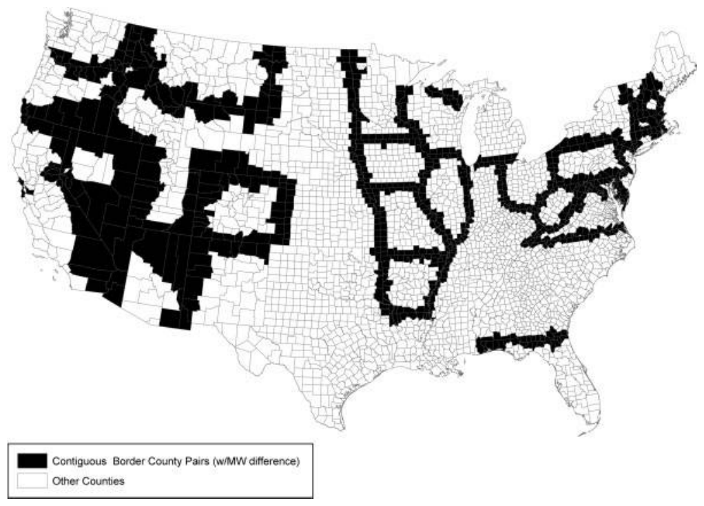
US states may set a minimum wage above the federal one. st_touches(), on the next slide, finds such pairs. The map is Figure 2 of “Minimum Wage Effects Across State Borders: Estimates Using Contiguous Counties”. Black counties are in a pair whose states had different minimum wages.
Counties that share a border
st_touches() lists, for each county, the counties that share part of its border. Tompkins has six: Cayuga, Chemung, Tioga, Seneca, Cortland and Schuyler.
R Console, in the 23-spatial-vector folder; co from Part 1
off <-c("AK", "HI", "PR", "AS", "GU", "MP", "VI") # Alaska, Hawaii and the five territorieslow <-st_transform(co[!co$STUSPS %in% off, ], 5070) # the lower 48 and DC, in metresnrow(low)#> [1] 3109nb <-st_touches(low) # for each county, the rows of the counties it touchesi <-which(low$GEOID =="36109") # Tompkins's rowlow$NAME[nb[[i]]]#> [1] "Cayuga" "Chemung" "Tioga" "Seneca" "Cortland" "Schuyler"
Two polygons touch when they share at least one border point. The result is a list: for each county, the row numbers of its neighbours. It takes about 2 seconds. Four island counties have no neighbours, because the file cuts counties at the shoreline. They are San Juan (WA), Nantucket and Dukes (MA), and Richmond (Staten Island, NY).
Counties as a graph
A graph is a set of nodes joined by edges. Here each county is a node and each pair of touching counties an edge: 3,109 nodes and 9,061 edges.
R Console, in the 23-spatial-vector folder; igraph from the chunk above; nb from the slides before
g <-graph_from_adj_list(nb, mode ="all") # node k is row k of low; an edge joins two neighboursc(nodes =vcount(g), edges =ecount(g))#> nodes edges #> 3109 9061
low is the 3,109 counties of the lower 48 and DC, and nb lists each county’s neighbours. With a graph, igraph can count the fewest borders between any two counties. On the map, a dot is a county and a line joins two counties that touch. Tompkins’s six lines are red.
First and second neighbours
A county’s first neighbours touch it.
Its second neighbours touch a first neighbour but not the county.
Tompkins has 6 first and 12 second neighbours, 3 of them in Pennsylvania.
The average of a variable over a county’s first neighbours is its spatial lag.
It is the usual way to put neighbours in a regression.
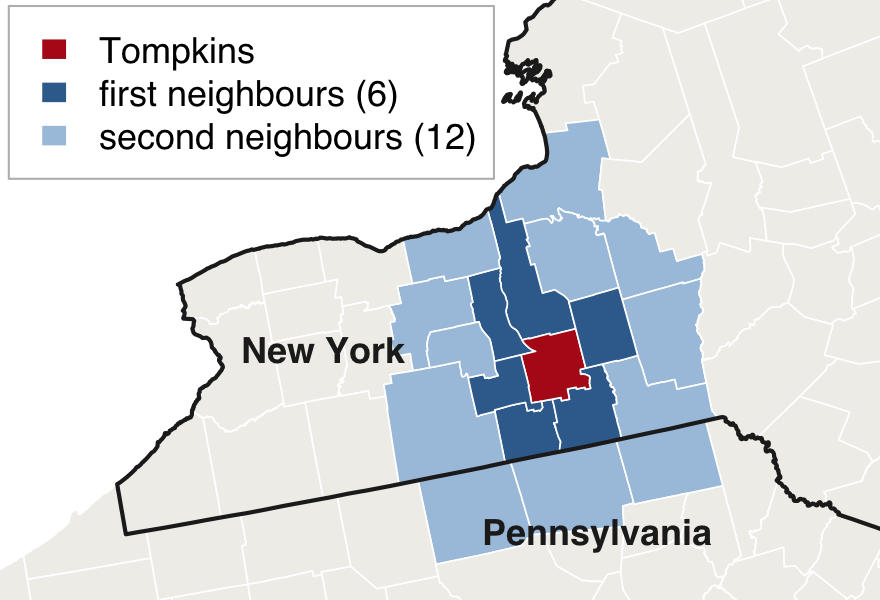
R Console; low, nb, g and i from the slides before; pop from the population merge
n2 <-as.numeric(ego(g, order =2, nodes = i, mindist =2)[[1]]) # rows of the second neighboursx <- pop$POPESTIMATE2024[match(low$GEOID, pop$GEOID)] # population, 2024x_nb <-sapply(nb, function(k) mean(x[k])) # first neighbours' averageround(c(Tompkins = x[i], first = x_nb[i], second =mean(x[n2])))#> Tompkins first second #> 105602 49829 113002
g is the graph and i is Tompkins’s row. ego() returns the counties within a given number of edges, and mindist = 2 drops the county and its first neighbours. The second neighbours have more people because they include Syracuse and Binghamton. In matrix form the spatial lag is Wx, where each row of W sums to 1. Second neighbours can instrument for the first neighbours’ average (Kelejian & Prucha, Journal of Real Estate Finance and Economics, 1998). Bramoullé, Djebbari & Fortin (Journal of Econometrics, 2009) use friends of friends the same way.
Method: They built a network of railroads, waterways and wagon roads, each with a cost per ton-mile. Then they found the cheapest freight route between every pair of counties.
Data: US counties and the value of their farmland, 1870 to 1890.
Result: Farmland was worth more where railroads cut the cost of reaching markets. Without railroads in 1890, it would have been worth about 60% less.
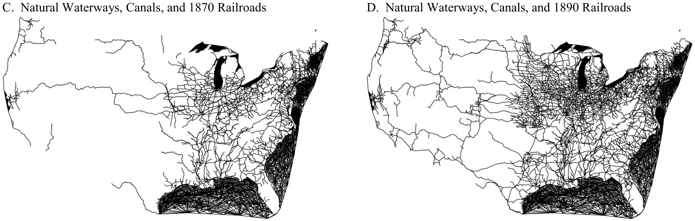
Market access measures how cheaply a county can reach buyers in every other county. The maps are panels C and D of Figure 2 in the 2013 working paper of “Railroads and American Economic Growth: A ‘Market Access’ Approach”.
Fewest county lines to Los Angeles
Without costs, each county line counts as one step.
The shortest route from Tompkins County to Los Angeles County crosses 57 county lines.
The route igraph returns passes through 58 counties in 14 states, north of the straight line.
R Console, in the 23-spatial-vector folder; low, g and i from the slides before
la <-which(low$GEOID =="06037") # Los Angeles Countydistances(g, i, la) # fewest county lines#> [,1]#> [1,] 57route <-shortest_paths(g, from = i, to = la)$vpath[[1]] # one route with 57unique(low$STUSPS[route])#> [1] "NY" "PA" "OH" "IN" "IL" "WI" "MN" "IA" "SD" "WY" "CO" "UT" "AZ" "CA"cen <-st_centroid(st_geometry(low)) # each county's centre
distances() counts the borders crossed on the shortest route. shortest_paths() returns one such route; many routes tie at 57. The dashed line joins the two county centres, 3,692 km apart. The code for the map is on the session page and in the live script.
4 minutes. Count the county lines from Tompkins to a county you pick, and the kilometres per line. From the slides before, low is the lower-48 counties and g their graph. i is Tompkins’s row and cen each county’s centre.
Find the county’s GEOID, since names repeat (three counties are called Cook): st_drop_geometry(low[low$NAME == "Cook", c("GEOID", "NAME", "STUSPS")]), then j <- which(low$GEOID == "17031") (Cook County, Illinois).
The fewest county lines, and the states on one route: n <- distances(g, i, j), then unique(low$STUSPS[shortest_paths(g, from = i, to = j)$vpath[[1]]]).
Kilometres per county line: d_km <- as.numeric(st_distance(cen[i], cen[j])) / 1e3, then round(d_km / n[1], 1).
Compare with the room: the most county lines anyone found. Then compare the kilometres per line for an eastern county and a western one.
R Console, in the 23-spatial-vector folder; low, g, i and cen from the slides before
gid <-c("36061", "17031", "12086", "48201", "53033", "06037", "53009")j <-match(gid, low$GEOID)r <-data.frame(NAME = low$NAME[j], STUSPS = low$STUSPS[j], lines =as.vector(distances(g, i, j)),km =round(as.numeric(st_distance(cen[i], cen[j])) /1e3))r$km_per_line <-round(r$km / r$lines, 1); r#> NAME STUSPS lines km km_per_line#> 1 New York NY 8 279 34.9#> 2 Cook IL 23 933 40.6#> 3 Miami-Dade FL 40 1913 47.8#> 4 Harris TX 44 2190 49.8#> 5 King WA 60 3579 59.6#> 6 Los Angeles CA 57 3692 64.8#> 7 Clallam WA 63 3734 59.3
Each county line covers about 35 to 45 km in the East. Near the West Coast it covers 60 to 65 km, because western counties are larger. The most is 63 lines, to Clallam County, WA. The four island counties cannot be reached.
Straight lines between cities
Roads are built where trade already is, so their effect is hard to measure. Straight lines between cities depend only on where the cities are, so they can serve as an instrument for roads.
Faber (REStud, 2014) drew the cheapest network joining the cities in China’s highway plan. Outlying counties on the highways grew about 18% less over nine years, as industry moved to the cities.
Banerjee, Duflo & Qian (JDE, 2020) measured each Chinese county’s distance to straight lines between historical cities. Counties nearer the lines had higher GDP per person but did not grow faster.
A minimum spanning tree is the shortest set of links that joins every city. “Trade Integration, Market Size, and Industrialization: Evidence from China’s National Trunk Highway System”; “On the Road: Access to Transportation Infrastructure and Economic Growth in China”.
Straight lines between New York’s cities
igraph finds the shortest set of straight lines joining New York’s five largest cities, a minimum spanning tree. It follows I-90 and I-87.
A county’s distance to these lines correlates 0.46 with its distance to the nearest Interstate.
City locations alone predict where the roads are.
R Console; igraph loaded; pt_ny and ny_co from the slides before
city <-data.frame(name =c("New York", "Buffalo", "Rochester", "Syracuse", "Albany"), # each city halllon =c(-74.0060, -78.8784, -77.6088, -76.1474, -73.7562),lat =c(40.7128, 42.8864, 43.1566, 43.0481, 42.6526))city <-st_transform(st_as_sf(city, coords =c("lon", "lat"), crs =4326), 5070)d_c <-matrix(as.numeric(st_distance(city)), 5) /1e3# km between every pairtree <-mst(graph_from_adjacency_matrix(d_c, mode ="undirected", weighted =TRUE))e <-as_edgelist(tree, names =FALSE); xy <-st_coordinates(city) # the 4 lines it keepsln <-st_sfc(lapply(1:nrow(e), function(r) st_linestring(xy[e[r, ], ])), crs =5070)ny_co$km_line <-apply(st_distance(pt_ny, ln), 1, min) /1e3# county to the nearest lineround(cor(ny_co$km_line, ny_co$km_it), 2)#> [1] 0.46
The five cities are the main cities of New York’s five largest metropolitan areas. The tree’s total length is 644 km. st_linestring() makes a line from a matrix of points.
Distance in other spaces
Distance need not be on a map: firms can be close in what they patent, and counties in their Facebook friendships.
Two firms with the same shares of patents in each class are as close as possible. The social return to research is at least twice the private return. “Identifying Technology Spillovers and Product Market Rivalry”; “Social Connectedness: Measurement, Determinants, and Effects”.
Tompkins County’s friends, by county
In Meta’s Facebook data, Tompkins has the most friendship links with its six neighbours.
Links fall with distance: 1% farther, 0.77% fewer links.
Far away, the most linked counties hold universities, like Tompkins: Charlottesville (VA), Orange (NC) and Boulder (CO).
R Console, in the 23-spatial-vector folder; low, i, cen and pop from the slides before
sci <-read.csv("data_clean/sci_tompkins.csv", colClasses =c(GEOID ="character"))k <-match(sci$GEOID, low$GEOID) # NA outside the lower 48sci$km <-as.numeric(st_distance(cen[i], cen))[k] /1e3# from Tompkins's centres <- sci[sci$GEOID !="36109"&!is.na(k), ]coef(lm(log(sci) ~log(km), s))["log(km)"] # % change in links per 1% more km#> log(km) #> -0.7664943big <- pop$GEOID[pop$POPESTIMATE2024 >40000] # counties over 40,000 peoplefar <- s[s$km >500& s$GEOID %in% big, ]head(low$NAME[match(far$GEOID[order(-far$sci)], low$GEOID)], 3) # most linked, over 500 km away#> [1] "Charlottesville" "Orange" "Boulder"
sci is Meta’s Social Connectedness Index: friendship links between two counties, divided by the product of their numbers of Facebook users. big drops counties under 40,000 people, whose numbers are noisy. Over all county pairs, Bailey et al. find 1.48. I cut the file with tools/cut_sci.R.
Standard errors for nearby places
Nearby counties share weather and markets, so their regression errors are correlated.
A standard error measures how much an estimate would vary from sample to sample. Pairs of places get less weight the farther apart they are, and none beyond the cutoff. Conley’s paper is titled “GMM Estimation with Cross Sectional Dependence”.
Conley standard errors with fixest
Across the lower 48, denser counties grew faster from 2020 to 2024.
Neighbouring counties have similar residuals, which the robust standard error ignores.
Allowing correlation within 100 km nearly doubles the standard error.
Within 500 km, it is 4.6 times as large.
The estimate stays 0.65 points of growth per log point of density.
R Console; fixest from the slide before; low and pop from the slides before
fixest is an R package for regressions; feols() fits one. "hetero" is the robust standard error, which allows unequal variances but no correlation. conley(100) allows correlation between counties up to 100 km apart.
4 · An application to wildfire smoke
Overview of part 4
How many people lived under wildfire smoke each day of June 2023.
A study: wildfire smoke and earnings, by county and day.
The data: NOAA’s smoke outlines, one file per day of June 2023.
The variable: each county’s smoke each day, and the people under heavy smoke.
A check: ground monitors, because smoke can pass high overhead.
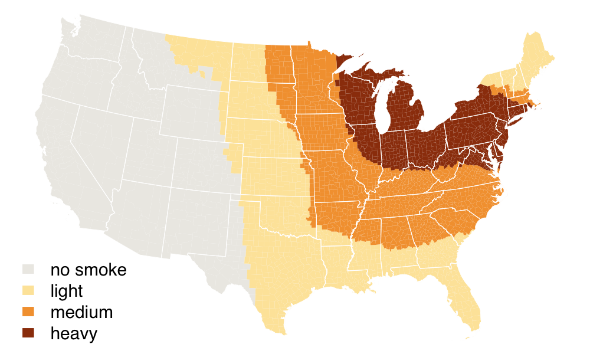
Later in this part: each county’s smoke on 7 June 2023.
Method: Each day, NOAA analysts outline the smoke they see in satellite images. The authors counted the days a plume covered each whole US county.
Data: smoke days per county and quarter, and EPA monitors within 20 miles of each county’s centre.
Result: Each smoke day lowered earnings per person that quarter by about 0.1%.
Top: the outlines from NOAA’s Hazard Mapping System (HMS) on 7 June 2023, when smoke from fires in Quebec reached New York. Bottom: the paper’s Figure 1 (2022 working paper), the days each county was fully covered by smoke, 2007 to 2019.
Counties under smoke on 7 June 2023
NOAA analysts drew 88 smoke plumes on 7 June, each light, medium or heavy.
As in the earnings study, a county is under smoke when a plume covers all of it.
Heavy smoke covered 639 counties, home to 106 million people.
R Console, in the 23-spatial-vector folder; low from Part 3, pop from Part 1; reads data/noaa/hms/
s <-st_read("/vsizip/data/noaa/hms/hms_smoke20230607.zip", quiet =TRUE) # /vsizip/ reads inside the zips <-st_transform(st_make_valid(s), 5070) # 88 plumes, in metreslev <-c(Light =1, Medium =2, Heavy =3) # densities as numbersdensest <-function(s) sapply(st_within(low, s), function(k) if (length(k)) max(lev[s$Density[k]]) else0)d7 <-densest(s)table(d7) # 0 none, 1 light, 2 medium, 3 heavy#> d7#> 0 1 2 3 #> 427 894 1149 639low$pop <- pop$POPESTIMATE2023[match(low$GEOID, pop$GEOID)] # people, July 2023sum(low$pop[d7 ==3]) /1e6# millions under heavy smoke#> [1] 105.6756
low is the 3,109 counties of the lower 48 and DC. st_within(low, s) finds, for each county, the plumes that cover all of it, and max() keeps the densest. Large counties are rarely fully covered. A point inside each county, or the share under smoke, would avoid this.
Thirty days, one table
Running the same function on each day’s file gives a table of 3,109 counties by 30 days. Adding up the people in heavy-smoke counties gives the number under heavy smoke each day.
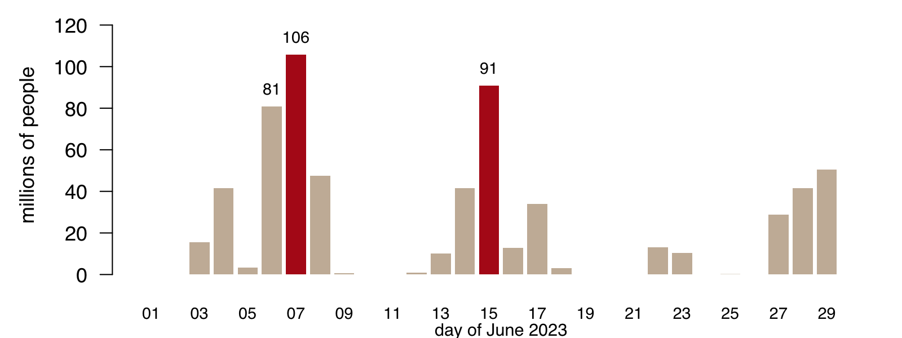
R Console, in the 23-spatial-vector folder; densest and low from the slide before; reads data/noaa/hms/
hms_files <-list.files("data/noaa/hms", full.names =TRUE) # one zip per day of June 2023smoke <-function(f) st_transform(st_make_valid(st_read(paste0("/vsizip/", f), quiet =TRUE)), 5070)day <-as.Date(substr(basename(hms_files), 10, 17), "%Y%m%d") # hms_smoke20230607.zip: 7 Junedens <-sapply(hms_files, function(f) densest(smoke(f))) # counties x days, about 6 secondscolnames(dens) <-format(day); dim(dens)#> [1] 3109 30heavy <-colSums(low$pop * (dens ==3), na.rm =TRUE) /1e6# millions under heavy smoke, each dayround(heavy[c("2023-06-07", "2023-06-15", "2023-06-29")])#> 2023-06-07 2023-06-15 2023-06-29 #> 106 91 51
The table is a panel: each county over time, one column per day. Red marks the two days above 90 million people, June 7 and June 15. Tompkins had 5 days of heavy smoke in June. In all, 1,739 counties, home to 172 million people, had at least one.
June 2023, day by day
Each frame is one day of June 2023, with each county coloured by its smoke.
The bars below show the people under heavy smoke.
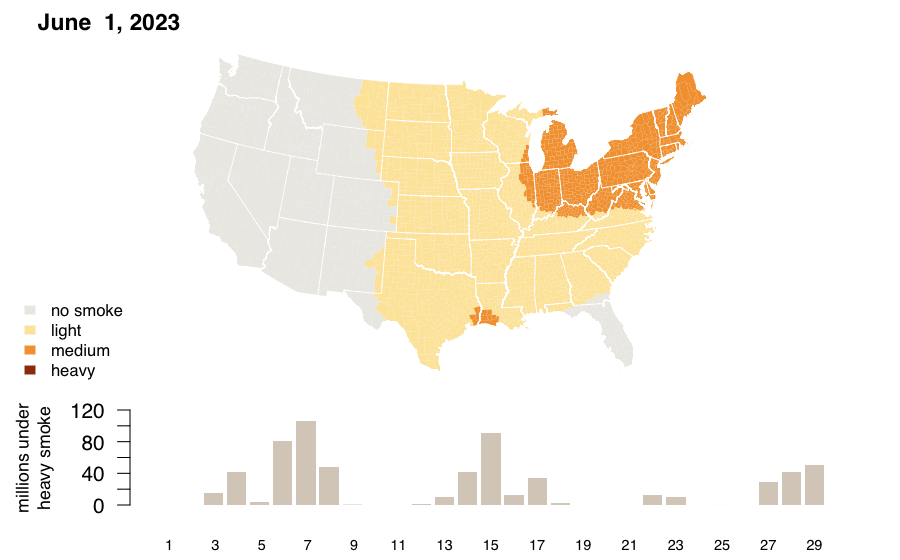
I drew the table dens once per day and joined the frames into a GIF with the magick package. The code is on the session page and in the live script.
Smoke aloft and smoke at the ground
A satellite sees smoke at any height, and a plume can pass kilometres overhead.
The EPA’s 947 ground monitors measure the fine particles people breathe.
Under heavy plumes, the median monitor read 90 µg/m³ on June 8 and 114 on June 28.
On June 15 it read only 14, below the daily standard of 35.
Heavy plumes still covered counties home to 91 million people that day.
Each red point is the median of the monitors under a heavy plume that day. Grey is the median under no plume. Days with fewer than 10 monitors under a heavy plume are left out. st_intersects() finds the plumes over each monitor; the code is on the session page. PM2.5 means particles 2.5 micrometres across or smaller, as a 24-hour average. A smoke variable built from the plumes should be compared with the monitors.
Practice
The session page has twelve practice tasks, with solutions you can open. They run in the 23-spatial-vector folder. Task 4 downloads the Census road file (38 MB), and task 9 installs spData, an R package of world maps.
1–3 Counties and their data: people per km² · how round each New York county is · the neighbours’ average population
4–6 Measuring and routes: Interstate miles in Pennsylvania · each county’s distance to Pennsylvania · every county on the 57-line route to Los Angeles
7–8 The page’s Medicaid example (public health insurance): one state border at a time · without Wisconsin, which covered low-income adults without expanding
9 Distance by sea on a round world, from Los Angeles to Shanghai
10 The page’s Cujubim example: clearing far from any mapped road · road distance to town by period
11–12 Smoke: heavy-smoke days for each New York county · people under smoke, using a point inside each county instead of the whole county